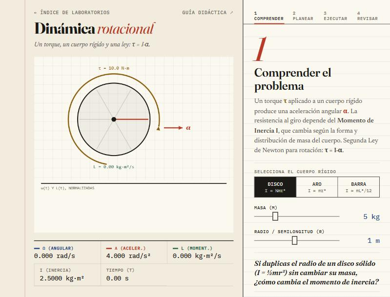
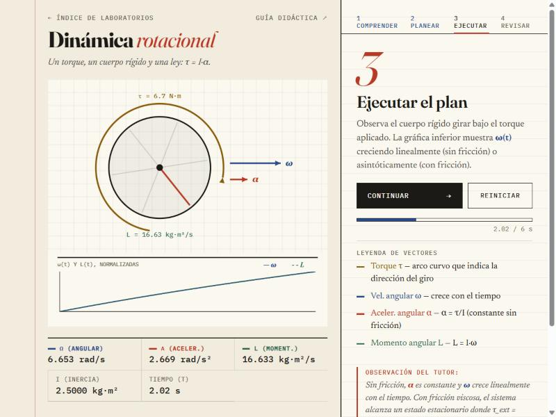
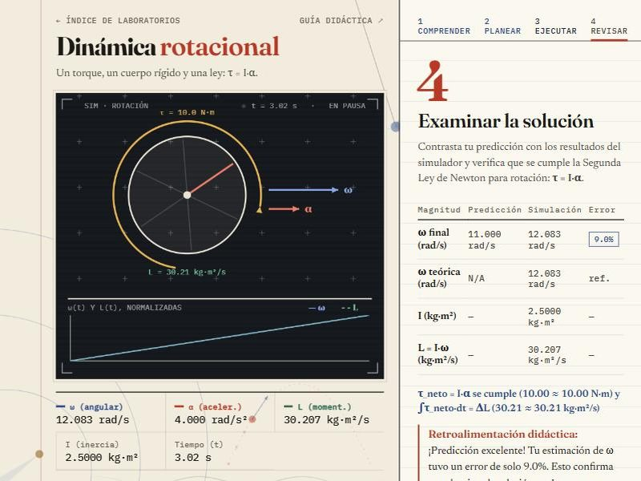

Dinámica rotacional
Guía didáctica del estudiante · método de Pólya · Física — UNIR
Un torque, un cuerpo rígido y una ley: τ = I·α. Con esta guía vas a explorar cómo la forma de un cuerpo cambia su resistencia a girar y a comprobar la segunda ley de Newton para la rotación.
La segunda ley de Newton para la rotación
Igual que F = m·a describe el movimiento de traslación, existe un análogo rotacional: un torque τ aplicado a un cuerpo rígido con momento de inercia I produce una aceleración angular α.
El momento angular L es la versión rotacional del momento lineal (p = m·v):
Momentos de inercia de los cuerpos del simulador
El momento de inercia mide la resistencia de un cuerpo a cambiar su rotación, igual que la masa en la traslación.
Cuerpos disponibles
| Cuerpo | Fórmula de I | Observación |
|---|---|---|
| Disco sólido | I = ½·m·r² | Masa distribuida hasta el borde. Menor I que el aro. |
| Aro o cilindro hueco | I = m·r² | Toda la masa en el borde. Mayor I que el disco. |
| Barra con eje en el centro | I = (1/12)·m·L² | L es la longitud total (L = 2r en el simulador). |
Comprender el problema
Antes de simular, elige el cuerpo rígido y anota sus características.

En tu cuaderno · variables
| Variable | Símbolo | Unidad | Tu valor |
|---|---|---|---|
| Masa | m | kg | |
| Radio o semilongitud | r | m | |
| Tipo de cuerpo | — | — | |
| Momento de inercia calculado | I | kg·m² |
Si cambias del disco al aro con los mismos m y r, ¿qué cuerpo girará más rápido bajo el mismo torque? ¿Por qué? Razónalo antes de probarlo.
Concebir un plan
Antes de simular, calcula la aceleración angular y la velocidad angular que esperas al final del tiempo configurado.
ω(t) = α·t = (τ / I)·t
En tu cuaderno · predicción
| Cálculo | Fórmula | Tu resultado |
|---|---|---|
| Torque aplicado | τ | N·m |
| Aceleración angular | α = τ/I | rad/s² |
| Velocidad angular final | ω = α·t | rad/s |
| Momento angular final | L = I·ω | kg·m²/s |
Con fricción viscosa (b > 0) la ecuación cambia: ω(t) = (τ/b)·(1 − e−b·t/I). ¿Cuánto vale ω cuando t → ∞? ¿Por qué el sistema deja de acelerar?
Ejecutar el plan
Inicia la simulación. Pausa en distintos instantes y anota la telemetría para verificar tu hipótesis. La barra de progreso indica el tiempo simulado.

En tu cuaderno · lecturas
| Tiempo t (s) | ω (rad/s) | α (rad/s²) | L (kg·m²/s) |
|---|---|---|---|
| 0 | 0 | 0 | |
| 1 | |||
| 2 | |||
| Final |
Sin fricción, ¿es α constante en todos los instantes? ¿Crece ω de forma lineal? Comprueba que L = I·ω se cumple en cada fila de tu tabla.
Examinar la solución
El simulador compara tu predicción con la simulación y con el valor teórico, y verifica la segunda ley con el torque neto: τneto = I·α, y el impulso angular acumulado ∫τneto·dt igual al cambio de momento angular ΔL.

En tu cuaderno · conclusiones
| Magnitud | Predicción | Simulación | Error (%) |
|---|---|---|---|
| ω final (sin fricción) | |||
| ω final (con fricción) | |||
| Verificación τ = I·α | — | — |
Conclusiones esperadas
- Sin fricción, α es constante y ω crece linealmente con el tiempo.
- Con fricción viscosa se alcanza una velocidad de estado estacionario ωss = τ/b, donde α → 0.
- El aro tiene mayor I que el disco (con igual m y r), así que acelera más despacio bajo el mismo torque.
- Con fricción, la segunda ley se verifica con el torque neto (el aplicado menos el de fricción), no con el aplicado.
- L = I·ω crece con el tiempo, igual que p = m·v en la traslación.
¿Por qué los patinadores sobre hielo giran más rápido cuando recogen los brazos? Relaciónalo con el momento de inercia y con la conservación del momento angular (L constante cuando el torque externo es cero).